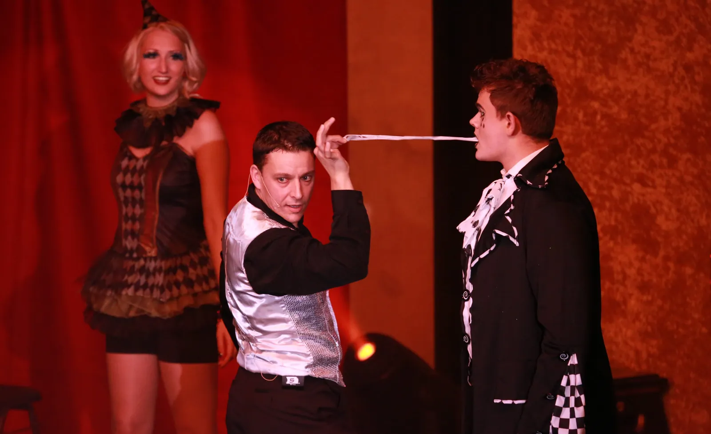

5 Sterne auf Google, Facebook und Yelp – transparent nachzulesen. Daraus mache ich kein Geheimnis.
Wir hatten den Zauberer LIAR zum Geburtstag unseres Enkelkindes gebucht. Er erschien super pünktlich und zog alle Gäste, insbesondere die Kinder, in seinen Bann. Wir waren außerordentlich zufrieden und können ihn uneingeschränkt weiterempfehlen.
Ein außergewöhnlich guter Künstler, der es versteht, seine Gäste – egal ob jung oder alt – zu verzaubern. Zum Teil erstaunliche Tricks, die man nicht durchschaut. Besonders schön: Er kommt auch an die Tische. Wärmstens zu empfehlen, für Veranstaltungen wie für kleinere Feiern.
Super sympathischer und netter Zauberer, der es versteht, sein Publikum in jedem Alter zu unterhalten und zum Staunen zu bringen. Schon mehrmals gebucht – immer wieder neue Tricks und Witze. Er kann super mit Kindern umgehen. Nur weiterzuempfehlen.

Geboren in Frankreich, verwurzelt im Ruhrgebiet – seit 2010 verzaubere ich als Zauberer LIAR Menschen in ganz NRW. Was als Leidenschaft begann, ist heute mein Beruf: über 5000 begeisterte Gäste und mehr als 15 Jahre Bühnenerfahrung.
Mein Stil verbindet französische Eleganz mit Comedy und verblüffender Magie. Ob elegante Tischzauberei beim Galadinner, mitreißende Bühnenshow oder fröhliche Kindershow – jede Darbietung ist auf das Publikum zugeschnitten. Zweisprachig DE/FR, auf Wunsch auch EN/ES.
Rufen Sie direkt an oder schreiben Sie mir – ich melde mich schnell mit einem unverbindlichen Angebot.